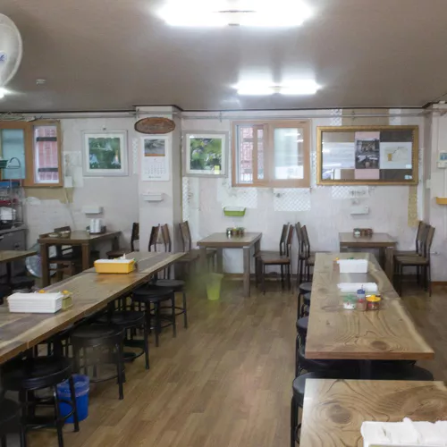

Listings (list view) (grid view)
- Samcheongdong Sujebi Sujebi bibgourmand priceGrade1 This local haunt has been an integral part of Samcheong-dong's history since 1982. The signature dish here is sujebi — rustic hand-pulled dough soup served in a savory anchovy broth. The restaurant is also known for its potato pancakes, made with grated potatoes that are pan-fried ... 101-1 Samcheong-ro, Jongno-gu
- Jaha Son Mandu Mandu bibgourmand priceGrade1 For over two decades, this restaurant has been attracting diners with a rustic dumpling recipe passed down from the owner's mother and her grandmother. Although humble by nature, dumpling dishes are always elegantly presented. Their signature dish is mandutguk: plump pork .. 12 Baekseokdong-gil, Jongno-gu
- Goobok Mandu Dim Sum bibgourmand priceGrade1 Run by a Korean husband and Chinese wife, Goobok Mandu is a no-frills establishment that specializes in Chinese-style dumplings. The couple prepare the dumplings from scratch based on an old family recipe passed down to them by her grandmother ... 7 Duteopbawi-ro, Yongsan-gu
- Limbyungjoo Sandong Kalguksu Kalguksu bibgourmand priceGrade1 ince 1988, this restaurant has been proving that a humble bowl of noodle soup can be truly memorable when done right. The pleasant texture of their hand-cut noodles, prepared daily from scratch, and immensely comforting broth, served piping hot and packed with ... 63 Gangnam-daero 37-gil, Seocho-gu
-  Daesungjip Doganitang bibgourmand priceGrade1 For a soul-satisfying bowl of ox knee soup, look no further than Daesungjip. Its reputation for quality and consistency has seen generations of loyal patrons come for the rich, hearty signature so thick with ox knee cartilage that you can stand a spoon up in it ... 5 Sajik-ro, Jongno-gu, Seoul
- Hwanggeum Kongbat Dubu bibgourmand priceGrade1 ucked away in Ahyeon-dong, this hidden gem specializes in rustic homemade bean curd. The unctuously creamy bean curd is made from scratch, daily, at the crack of dawn. The secret to the elevated nuttiness of local soybeans that shine through in Hwanggeum ... 9 Mapo-daero 16-gil, Mapo-gu
- Bongsanok Mandu bibgourmand priceGrade1 Mandutguk, or Korean dumpling soup, is a dish that is deeply rooted in the day-to-day lives of Koreans. Owner Yoon Young-sook became acquainted with Hwanghaedo-style dumpling soup through her mother-in-law, a native of Sariwon, which is north of the border ... 5-6 Banpo-daero 8-gil, Seocho-gu
- Yangyang Memil Makguksu Memil-guksu bibgourmand priceGrade1 The not-so-secret secret to the longevity and success of Yangyang Memil Makguksu is that its noodles are made with 100% buckwheat and that they are made to order every time. The proprietor of the restaurant began his business many years ago for one reason only - buckwheat ... 10 Donggwang-ro 15-gil, Seocho-gu
- Subaru Soba bibgourmand priceGrade1 Chef Kang Yeong-cheol has for long studied and developed the soba-making craft, with the sole aspiration to serve the same outstanding soba as can be tasted in the birthplace of the dish, The chef spent many years in Japan, where he became enamored with the pure taste of ... Bangbae-jungangno 21-gil, Seocho-gu
- Base is nice Vegetarian bibgourmand priceGrade1 Base is Nice is a vegetarian-friendly restaurant. Chef/owner Jang Jin-a had a fairly long career overseas as a restaurant consultant, food stylist, and food & beverage planner. The diner's natural ambience and well- balanced, vegetable-centered dishes are proud manifestations of her ... 20 Dohwa 2-gil, Mapo-gu
Categories
- A
- B
- C
- D
- E
- F
- G
- I
- J
- K
- M
- N
- R
- S
- T
- U
- V
- Y